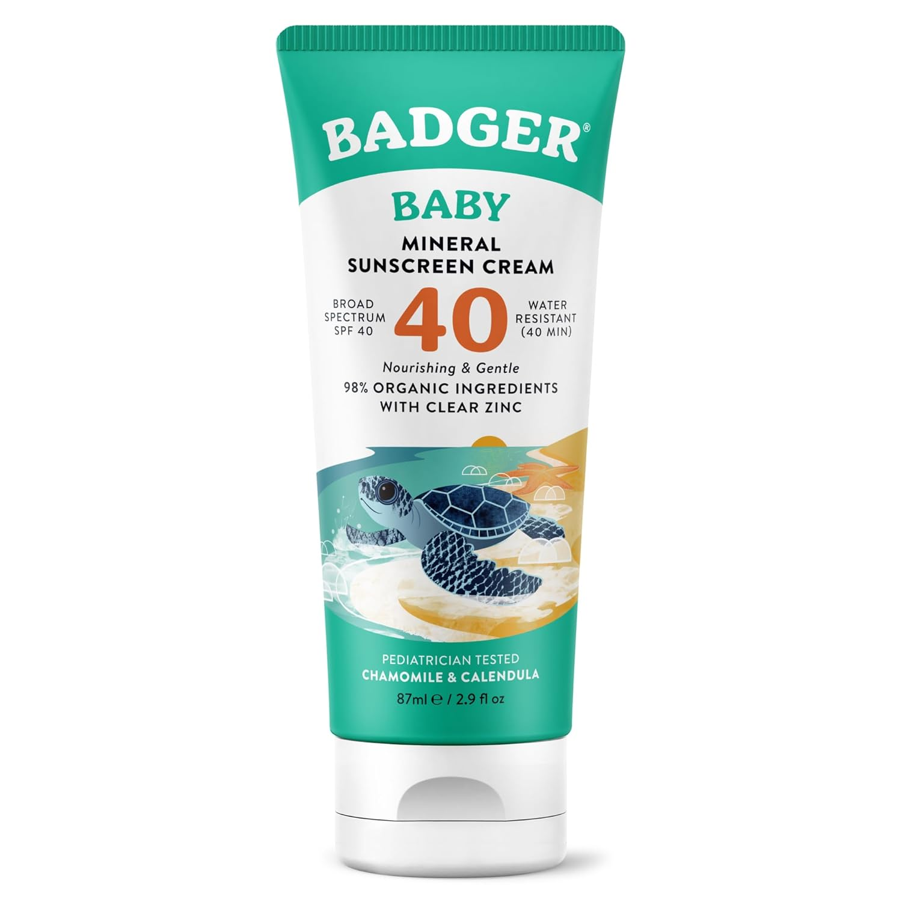
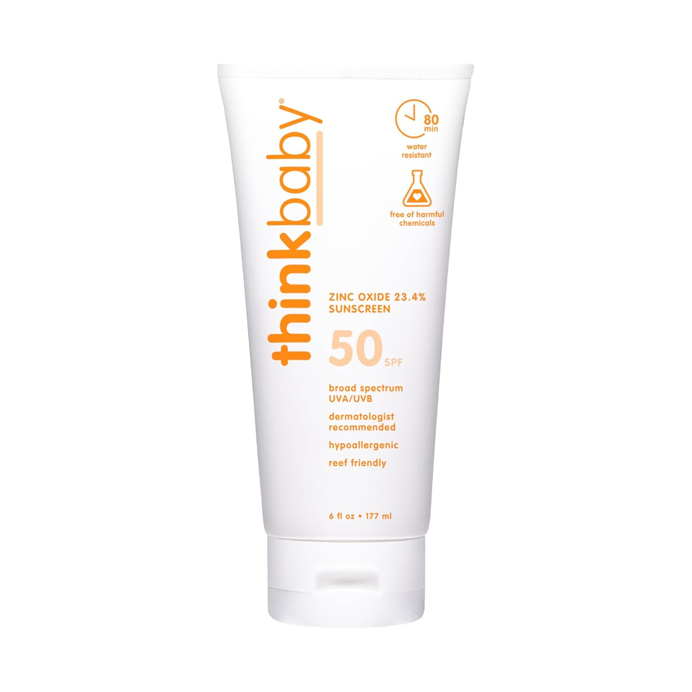
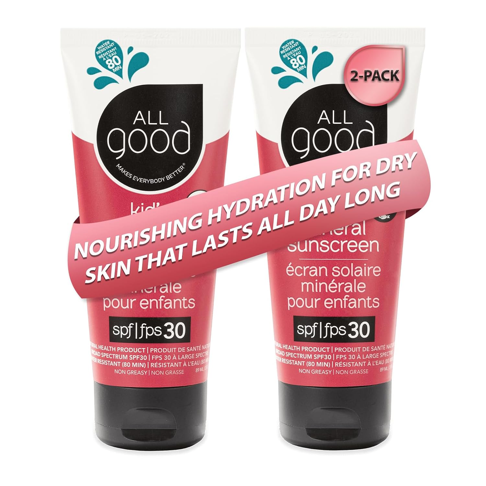
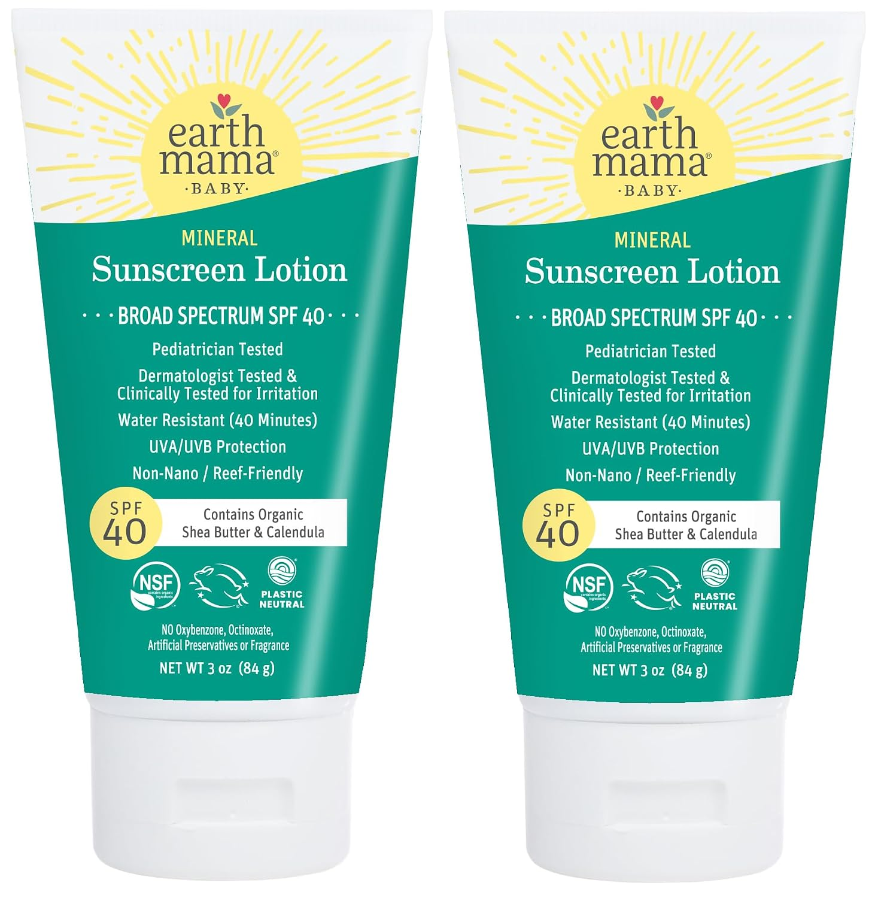

Summer is here, and if you have a baby, you already know that slathering on just any sunscreen isn't really an option. I went full deep dive on this — cross-referencing EWG's Skin Deep database, reading ingredient labels, and honestly stressing about it more than I probably needed to. But here's what I landed on, and why I actually feel good about these picks.
I'm referencing EWG (Environmental Working Group) scores throughout. EWG rates products on a scale of 1–10, where 1 is the cleanest and 10 is the most concerning. For my baby, I'm only comfortable with a 1 or 2.

#1 — The Gold Standard
Badger Baby Sunscreen SPF 40
This one consistently tops the EWG list and honestly it deserves it. It's zinc oxide only, unscented, and the ingredient list is short enough that I can actually read it without Googling anything. The texture is thick — I won't lie to you — but that's kind of the price you pay for clean. It goes on white and stays white, which my baby does not care about at all, so that's fine. If you're only going to keep one sunscreen in the diaper bag, make it this one.
Shop on Amazon
#2 — Best for Long Days Outside
Thinkbaby Safe Sunscreen SPF 50+
Thinkbaby was literally formulated by a dad who was frustrated with what was on the market, which I appreciate deeply. It's also zinc oxide based, reef-safe, and free from the usual suspects — oxybenzone, parabens, phthalates. The SPF 50+ gives me a little extra peace of mind for long outdoor days. It blends a bit easier than Badger, which is nice when your baby is very much not cooperating.
Shop on Amazon
#3 — Easiest to Apply
All Good Kids Sunscreen SPF 30
All Good is a brand I came to late and now I'm kind of obsessed. Their kids formula is zinc-based, certified reef-friendly, and water resistant for up to 80 minutes — which is huge for pool days. It's also one of the easier ones to spread, which matters when application time is approximately 4 seconds before the wiggling starts.
Shop on Amazon
#4 — Best for Sensitive Skin
Earth Mama Mineral Sunscreen SPF 40
Earth Mama is a brand I already trusted for other baby stuff, so it wasn't a huge leap to try their sunscreen. It checks all the boxes — mineral only, no synthetic fragrance, free from chemicals I can't pronounce. The SPF 40 is solid for everyday use, and the lotion formula is gentle enough for sensitive skin. Works especially well on the face, which is where I always stress the most.
Shop on AmazonA Few Things Worth Knowing
Avoid oxybenzone and octinoxate. These are the chemical filters most commonly flagged by EWG and have been shown to absorb into the bloodstream. For a baby's skin, that's a hard no for me.
Mineral means a physical barrier. Zinc oxide and titanium dioxide sit on top of the skin rather than being absorbed. That's what you want for a baby.
Reapply every 2 hours, or after water. Even the best sunscreen stops working if you forget this part.
Babies under 6 months should mostly be kept out of direct sun rather than covered in sunscreen — the AAP recommends sunscreen only on small exposed areas if shade and clothing aren't an option.